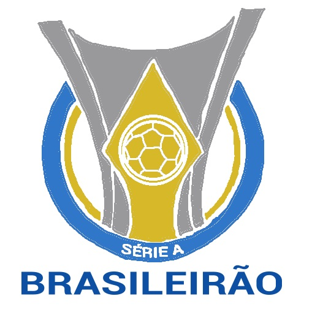
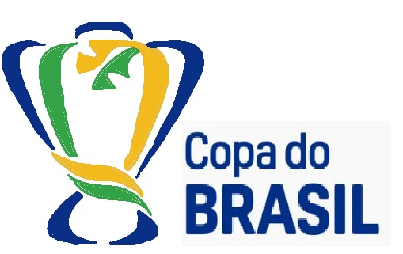
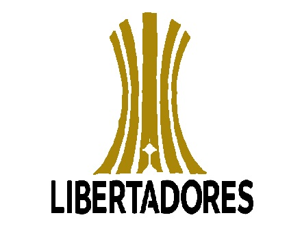

Futebol Brasileiro e Libertadores
Conheça as principais competições
O futebol brasileiro possui diversas competições, que acabam reunindo clubes de diferentes regiões do país além de possuir vagas garantidas na principal competição da América do Sul.
Neste site, você irá conhecer as 3 principais competições que um clube brasileiro pode competir, sendo elas: Copa do Brasil, Campeonato Brasileiro e Copa Libertadores.
Campeonato Brasileiro
O Campeonato Brasileiro é a principal competição do país, sendo disputado por 20 times por 38 rodadas possuindo 4 divisões sendo elas a Série A, Série B, Série C e Série D.
Como Funciona
O campeonato utiliza o sistema de pontos corridos, onde os times se enfrentam a cada rodada podendo ganhar, perder ou empatar, se o time ganhar ele irá receber 3 pontos, se empatar irá receber 1 ponto e se perder ele não irá receber nenhum ponto, no fim das 38 rodadas, o time que possuir mais pontos acaba levando a taça para casa.

Copa do Brasil
A Copa do Brasil é uma competição que junta clubes de todas as divisões do campeonato brasileiro.
Como Funciona
A Copa do Brasil funciona no formato de mata-mata, onde os times se enfrentam em 2 jogos, sendo um em casa e outro fora, o time que tiver a melhor pontuação no agregado avança para a próxima fase, caso os times acabem empatando no agregado, os times vão para uma disputa de pênaltis, onde o time que converter mais pênaltis avança, o campeão da Copa do Brasil garante uma vaga na Copa Libertadores.

Copa Libertadores
A Copa Libertadores é a principal competição de times da América do Sul, com a conmebol sendo a responsável por organizar a competição, a edição atual conta com 47 clubes dos 10 países filiados, sendo eles: Argentina, Bolívia, Brasil, Chile, Colômbia, Equador, Paraguai, Peru, Uruguai e Venezuela.
Fases da competição
- Fase de grupos
- Oitavas de final
- Quartas de final
- Semifinais e final
Como um clube brasileiro chega à Libertadores
-
Pelo Campeonato Brasileiro Série A, que dá 5 vagas:
- Do 1º ao 4º colocado: vaga direta na fase de grupos
- 5º colocado: vaga na fase preliminar
- Pela Copa do Brasil, o campeão ganha vaga direta na fase de grupos
- Pela Copa do Brasil, o vice-campeão ganha vaga na fase preliminar
- Quem for campeão da Libertadores ou da Copa Sul-Americana no ano anterior também garante vaga, e a vaga que ele ocuparia na tabela passa para o próximo colocado

Temos o bolão para descobrir quem será o campeão de cada competição: Participe do bolão